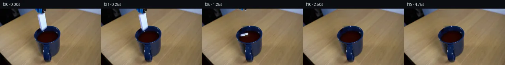

![首帧]()

Round 00
2026-11-05T00:32:45.323536+00:00像素候选变化代码 +318/−0inspection 更新
pixels 67707ec4c7e9a9d9 · code 2f9caf9fe04b4ee9
查看本轮 generate.py 真实 diff
--- previous/generate.py
+++ current/generate.py
@@ -0,0 +1,318 @@
+"""Pixel-only continuation: source matting/warping and analytic liquid motion."""
+from pathlib import Path
+import json
+import numpy as np
+from PIL import Image, ImageDraw
+import cv2
+from scipy.ndimage import map_coordinates, gaussian_filter, distance_transform_edt
+from scipy.special import j0, j1
+from artifact_io import save
+
+ROOT = Path(__file__).resolve().parent
+H, W = 144, 256
+Y, X = np.mgrid[:H, :W].astype(np.float64)
+SRC = np.array(Image.open(ROOT / 'first_frame.png').convert('RGB'))
+S = SRC.astype(np.float64)
+R, G, B = S.transpose(2, 0, 1)
+WOOD = (R-G > 10) & (G-B > 12) & (R > 70)
+
+
+def polygon_mask(points, scale=4):
+ m = Image.new('L', (W*scale, H*scale), 0)
+ ImageDraw.Draw(m).polygon([(int(round(x*scale)), int(round(y*scale))) for x,y in points], fill=255)
+ return np.asarray(m.resize((W,H), Image.Resampling.LANCZOS)).astype(float)/255
+
+
+def over(bg, fg, a):
+ return bg*(1-a[...,None]) + fg*a[...,None]
+
+
+def sample(rgb, sx, sy):
+ return np.stack([map_coordinates(rgb[...,k], [sy,sx], order=1, mode='nearest') for k in range(3)], -1)
+
+# Distinct source supports for ceramic and the two tool prongs.
+tile_outline = [(111.7,10.4),(113.6,12.2),(114.3,21.4),(115.5,30),
+ (117.3,40),(118.9,45.2),(117.2,47.8),(112.2,51.9),
+ (107.4,55.4),(104.1,53.1),(102.2,45.6),(99.8,36.2),
+ (97.9,28),(95.6,21.4),(94.8,16.4),(96.0,14.9),
+ (101.3,13.3),(107.7,12.0)]
+tile_poly = polygon_mask(tile_outline)
+tile_chroma = np.clip((B-G+18)/26, 0, 1)
+tile_alpha = tile_poly*tile_chroma
+# The last bluish pixels below the physical tip are its reflection, not ceramic.
+tile_alpha[Y > 55] = 0
+# Source pixels in the region occupied by the gripper.
+tool_roi = (X>=88)&(X<=117)&(Y<=13)
+tool_support = tool_roi & (~WOOD) & ((Y<11) | (X<111))
+tool_support &= ~((Y>=12)&(X<102))
+tool_alpha = gaussian_filter(tool_support.astype(float), .35)
+tool_alpha[~tool_roi] = 0
+
+# Background removal is restricted to the supports and a one-pixel fringe.
+remove_tile = ((tile_poly>.03)&(tile_chroma>.02)) | ((X>=103)&(X<=112)&(Y>=54)&(Y<=57))
+remove_tool = tool_support.copy()
+remove = cv2.dilate((remove_tile|remove_tool).astype(np.uint8), np.ones((3,3),np.uint8)) > 0
+remove &= (X>=87)&(X<=121)&(Y<=58)
+plate = S.copy()
+# Horizontal interpolation retains the measured timber hue. Add same-frame
+# neighboring high-frequency grain with a continuous coordinate mapping.
+for y in range(59):
+ ids = np.flatnonzero(remove[y])
+ if not len(ids):
+ continue
+ lo,hi = int(ids[0]),int(ids[-1])
+ l = max(lo-3,0); rr = min(hi+3,W-1)
+ # At the cropped upper edge the neighboring left sample is outside timber.
+ left = np.median(S[y,max(0,l-3):l+1],axis=0)
+ right = np.median(S[y,rr:min(W,rr+4)],axis=0)
+ if not WOOD[y,l]:
+ left = right - np.array([3.,3.,3.])
+ for x in ids:
+ a = (x-l)/max(1,rr-l)
+ v = (1-a)*left+a*right
+ tx = min(W-4, rr+6+(x-lo))
+ grain = S[y,tx] - np.mean(S[y,max(0,tx-2):min(W,tx+3)],axis=0)
+ plate[y,x] = v + .55*np.clip(grain,-4,4)
+
+# Rebuild the small occluded back-rim section using the fitted tilted ellipse
+# symmetry and only clean pixels from the right back rim.
+OCX, OCY, ORX, ORY, SLOPE = 119.071713,66.226338,33.180756,22.853457,-.103907
+sx = 2*OCX-X
+sy = Y + SLOPE*(sx-X)
+mirror = sample(S, sx, sy)
+back_edge = OCY + SLOPE*(X-OCX) - ORY*np.sqrt(np.maximum(0,1-((X-OCX)/ORX)**2))
+rim_factor = np.clip(.66+.34*(X-95)/(OCX-95),.66,1.0)
+mirror *= rim_factor[...,None]
+inside_rim = np.clip((Y-back_edge+.7)/1.2,0,1)
+rim_patch = remove.astype(float)*inside_rim*(Y>=41)
… diff truncated; 231 more lines …